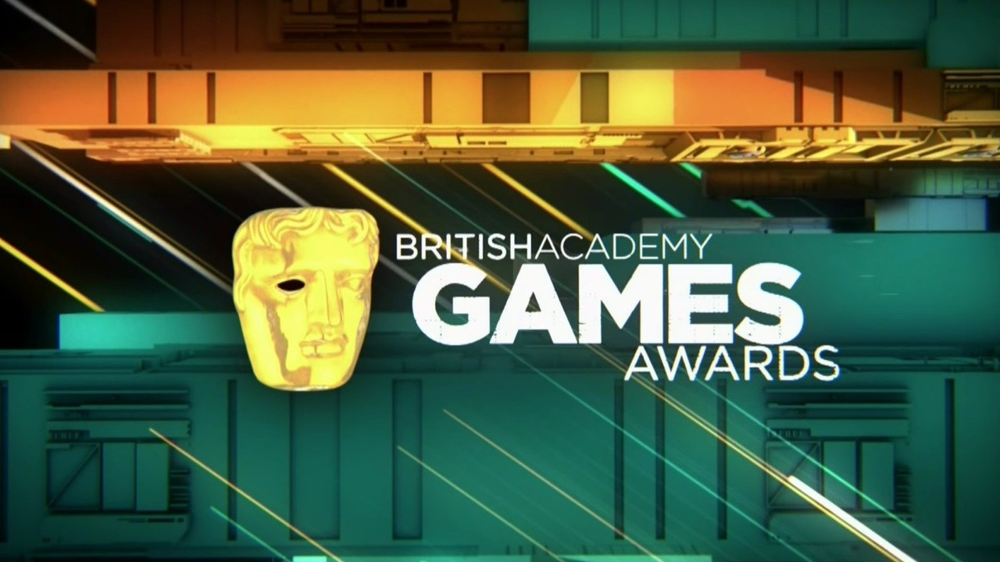
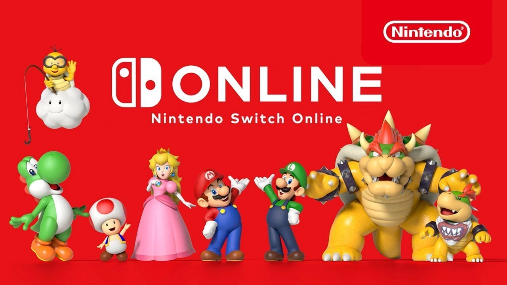
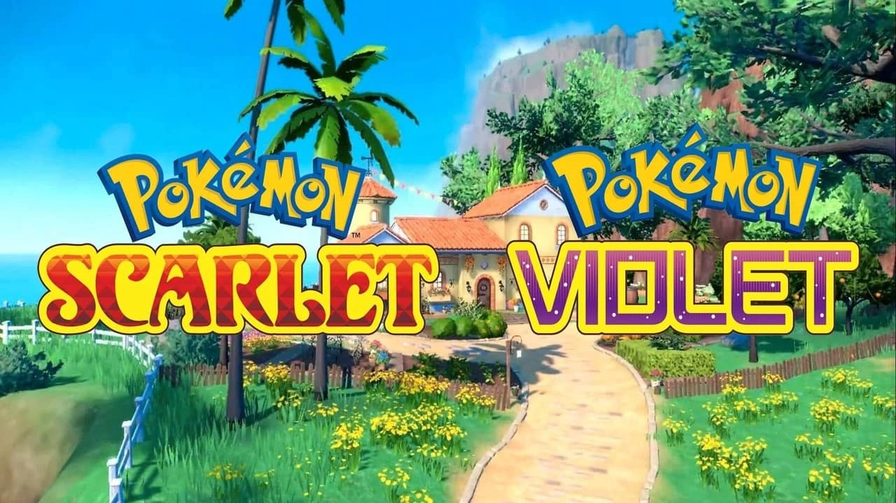
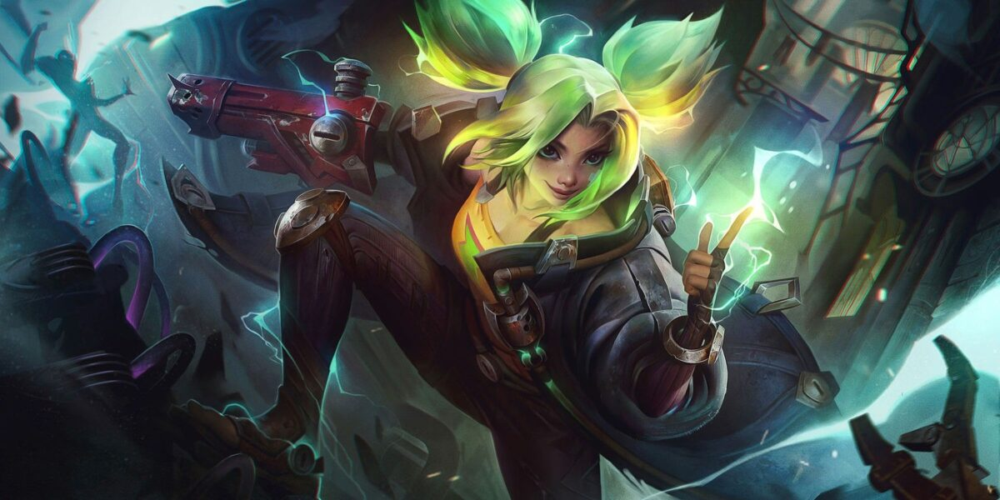

Elden Ring carece de una característica clave para los juegos de mundo abierto
Agregar un bestiario a Elden Ring ayudaría a los recién
llegados, alentaría la ...
PlayStation 5 Pro podría ser filtrada gracias a un misterioso envío
Un misterioso y reciente envío de Sony podría evidenciar la
existencia ...

Se anuncian los nominados a los BAFTA Games Awards 2022
Se da a conocer a los nominados a las diversas categorías que tendrá esta premiación...

Todo sobre las misiones y recompensas de Nintendo Switch Online
Los servicios de suscripción a juegos han cambiado mucho en
la ...

Es demasiado pronto para una nueva generación Pokémon
La nueva generación de Pokémon ha comenzado, con el reciente
anuncio ..

League of Legends – Riot tiene varios Nerfs planeados para Zeri
Uno de los campeones más nuevos de League of Legends, Zeri,
...

The King of Fighters tendrá un crossover con Street Fighter
Iori Yagami y Kyo Kusanagi compartirán pantalla con Ryu, Chun-Li y otros personajes...
Elden Ring carece de una característica clave para los juegos de mundo abierto
Agregar un bestiario a Elden Ring ayudaría a los recién
llegados, alentaría la ...
Elden Ring carece de una característica clave para los juegos de mundo abierto
Agregar un bestiario a Elden Ring ayudaría a los recién
llegados, alentaría la ...
Elden Ring carece de una característica clave para los juegos de mundo abierto
Agregar un bestiario a Elden Ring ayudaría a los recién
llegados, alentaría la ...